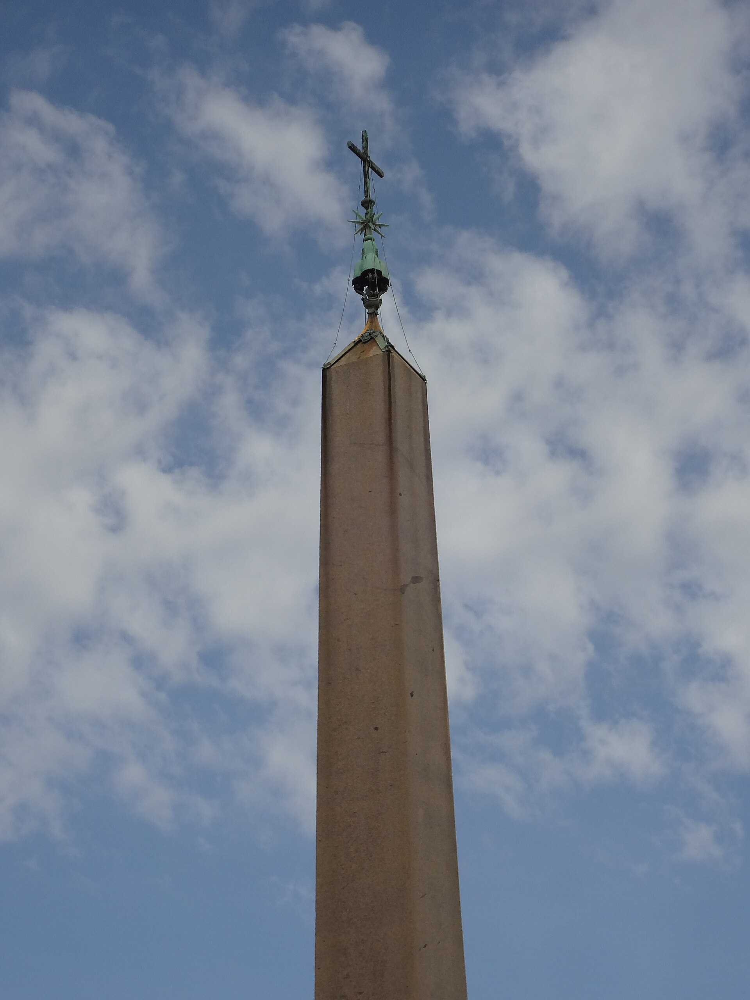
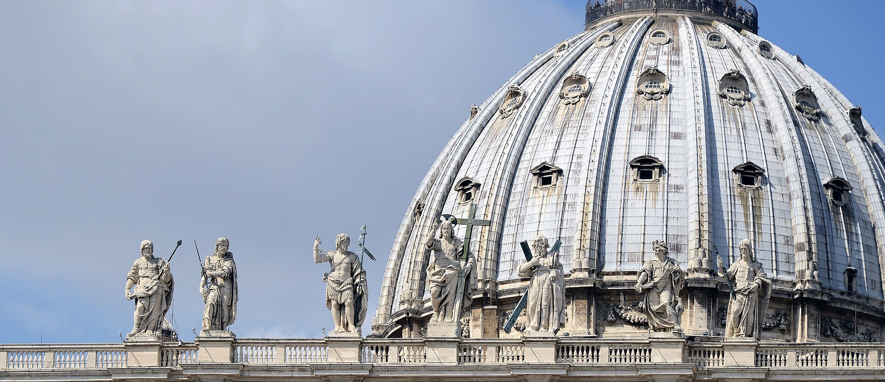
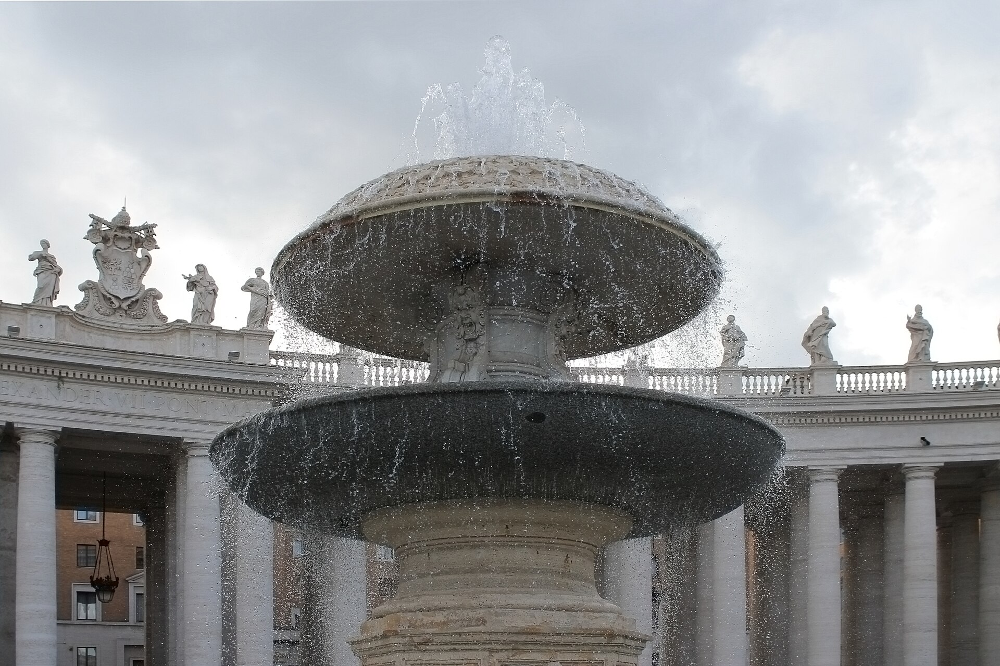

1656-1667 年贝尼尼设计的椭圆形广场：340 米纵深、284 根多立克柱分四列排布，柱顶站着 140 位圣徒雕像。设计理念是“教会的拥抱”--柱廊如双臂张开，迎接（或挽留）每一位来者。
看点路线
Il Percorso
- 1找两块圆盘：站在喷泉与方尖碑之间的白色圆点上，柱廊 miracolosamente 叠成一排
- 2方尖碑高 25 米：公元 37 年从埃及亚历山大运来
- 3柱顶 140 圣徒像--带长焦才能看清表情
- 4周日上午正午：教皇在书房窗口领三钟经（免费，无需票）
广场看点
La Piazza · 4 个几何魔法
消失点把戏
广场椭圆有两个焦点，各嵌一块白色石盘。站上其中一块（靠近喷泉处），四条柱廊的纵深会“坍缩”成一排柱子--你看到的是设计师埋在石头里的视错觉，1680 年代没有特效，这就是特效。

梵蒂冈方尖碑
无象形文字的“沉默方尖碑”原属卡利古拉，立在尼禄竞技场中央--圣彼得殉道的位置附近。1586 年丰塔纳率 900 人、75 匹马、40 台绞盘将它竖到今日位置，全程只许喊“水！水！”（防止绳索起火）--那个上午没有出一次事故，罗马人当 miracle 纪念了四百年。

140 圣徒像
柱廊顶部的圣徒群像用了贝尼尼工作室与几代雕塑家 40 年。远看是轮廓，长焦看是表情--每尊都在 3 米高处演出自己的殉道故事。

两座喷泉与“风”
广场两侧喷泉一旧一新，交替喷水 400 年。贝尼尼把方尖碑与喷泉连成轴线，让水、石头与光在椭圆里流动--巴洛克广场的“总谱”，每个元素都是音符。
历史故事
Le Storie
壹把埃及搬来罗马
方尖碑的旅程本身就是史诗：公元前 1 世纪在埃及雕成，公元 37 年被卡利古拉皇帝装上特制巨舰横渡地中海，立在尼禄竞技场旁。
1586 年教皇西斯笃五世决定把它挪到圣彼得广场门前。工程大师丰塔纳造了一座 27 米高的木塔吊装，下达了史上最严苛的军令：全程静默，只有“水”一个口令。
传说一名水手看见绳索冒烟，高喊“水！”救了整座工程--他非但没被处罚，教皇还特许他的家乡教区至今可用棕榈叶供应圣枝主日。碑顶的风向球里，中世纪人相信封存着凯撒的骨灰。
贰广场上的政治学
贝尼尼接单时，教廷给了他一个明确的政治任务：新教改革后，天主教需要一场“空间宣传”。他的答案是椭圆--不像文艺复兴的完美圆形，椭圆有两个焦点、有朝向、有拥抱的姿态。
柱廊四列纵深让 25 万人能同时看清教堂立面与教皇窗口；“母亲的臂弯”既欢迎信徒，也在暗示：离开教会就是离开怀抱。
今天广场仍每周上演这种体验的现版本：周三教皇接见、周日正午三钟经，一个 17 世纪的剧场设计，仍在为 21 世纪的直播服务。
叁消失点把戏
广场椭圆有两个焦点，各嵌一块白色石盘。站上其中一块（靠近喷泉处），四条柱廊的纵深会“坍缩”成一排柱子--贝尼尼埋在石头里的视错觉。
17 世纪没有特效，这就是特效。这个把戏后来被无数次写进建筑教科书的“透视”章节。
两块圆盘的位置常年有人排队站上去拍照。等轮到你时，记得回头看一眼你朋友站的那块：从对面看，你也是别人的魔术。
肆140 位圣徒的“楼上”
柱廊顶部站着 140 位圣徒雕像，由贝尼尼工坊与几代雕塑家在 1662-1703 年间陆续立起。
远看是轮廓，长焦看是表情：每位圣徒手里拿着自己的殉道刑具或象征物--圣彼得的钥匙、圣安德烈的 X 形十字、圣洛伦佐的烤架。
这是世界上最大的一组雕塑阵列。它们站了三百多年，看过了从马车到无人机的全部罗马交通史。
伍两座喷泉的“对话”
广场两侧各一座喷泉：右侧的马代尔诺喷泉（1613）先建，左侧的贝尼尼喷泉（1677）后建--贝尼尼刻意让两座对称又略有差异，轴线因此有了呼吸。
水从古老渡槽的支线引来（今天由现代泵站供压），五百年未停。教皇国的水利遗产，在广场上以喷泉的形式值班。
夏天的广场，两座喷泉是鸽子的澡堂与游客的背景板--巴洛克的基础设施，退休后成了风景。
陆周三的教皇与免费的票
教皇公开接见每周三上午在广场或保禄六世大厅举行：门票免费，但需提前在梵蒂冈官网预订。冬季移入大厅，夏季多用广场。
凌晨起，各国朝圣团打着旗子在安检口排队--队伍本身就是一场世界地理课。
如果行程赶不上周三，退而求其次：周 日正午 12 点，教皇在书房窗口领三钟经，无需任何票--这是全罗马性价比最高的“国家元首见面会”。
柒瑞士卫队的 5 月 6 日
广场右侧的青铜门通向宗座宫，门旁站着瑞士卫队：红黄蓝条纹制服、 halberd 长戟。每年 5 月 6 日，新兵在此宣誓--纪念 1527 年罗马之劫中为掩护教皇撤离战死的 42 名卫兵。
卫队 1506 年成立，是世界上现存最古老的常备军事单位之一。成员要求：瑞士公民、天主教徒、未婚、19-30 岁。
“制服是米开朗基罗设计的”是流传最广的误会--现在的制服 1914 年才定型。但米开朗基罗确实画过卫队速写，误会因此情有可原。
捌广场的“排洪系统”
椭圆广场的地面并非水平：从中轴向两侧有肉眼难辨的缓坡，雨水汇入柱廊脚下的 hidden 排水口--贝尼尼时代的排水设计至今工作。
暴雨时的圣彼得广场是罗马城市排水的“考试现场”：低洼的罗马城多处积水，广场总是最先排干。
低头找柱廊底座上的狮头排水口：17 世纪的水力学，至今在雨季“张嘴”。
玖邮局、邮戳与“世界上最小的国家服务”
广场右侧的柱廊里藏着梵蒂冈邮局：用自己的邮票与邮戳--世界集邮者的圣地。给自己寄一张明信片，是最经典的梵蒂冈仪式之一。
梵蒂冈还发行自己的欧元硬币（教皇侧脸版），在市面流通极快--收到要靠运气。
一个 0.44 平方公里的国家，维持着完整的邮政、货币、电台与铁路（800 米货运线）。主权可以很小，机构必须齐全。
拾平安夜的广场
12 月 24 日晚，广场立起圣诞马槽与圣诞树，午夜弥撒在殿内举行，广场的大屏向数万人转播--这是天主教世界的一年一度的“跨年仪式”。
马槽与树每年由不同地区捐赠（近年来自意大利各行政区与欧洲各国），落成仪式本身就是新闻。
复活节的 Urbi et Orbi（降福全城与全球）也从这里发出。广场的日常是游客的，它的节日是全世界的。
参观贴士
Consigli Pratici
- 清晨 7 点广场几乎无人且逆光拍立面剪影绝美；夜晚灯光下柱廊氛围另一番
- 站在两块白盘标记上看柱廊叠柱魔术（分别在两座喷泉旁找圆形石盘）
- 周三上午教皇公开接见需提前官网订免费票（ Benedictus 式人群管理）；周日正午三钟经无需票
- 安检口在柱廊右侧，大件行李免费寄存（寄存处关闭时间早于广场）
- 广场不允许无人机；三脚架需许可
顺路同游
Da Non Perdere